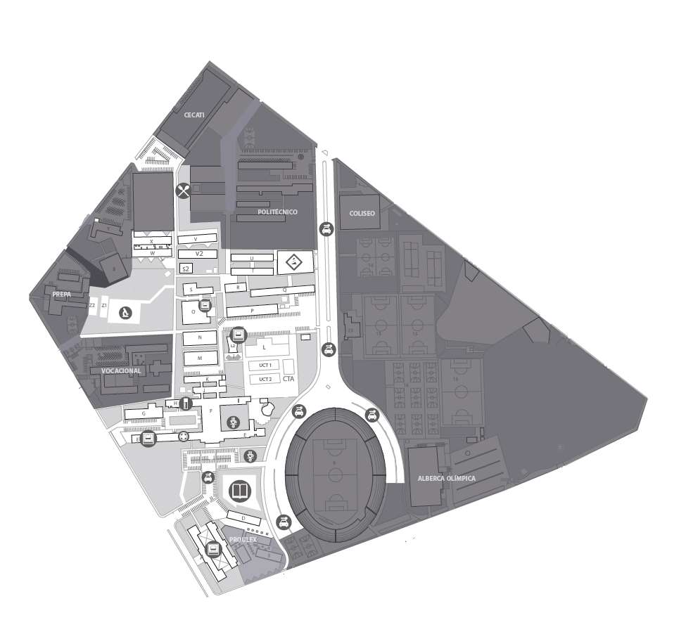

Infestación severa de pulgones en plantas de tomate. Requiere intervención inmediata.
Nivel crítico de humedad en el suelo. Las plantas están marchitándose.
Manchas blancas en hojas de calabacín. Posible oídio en etapa temprana.
Crecimiento de malezas compitiendo con cultivos por nutrientes.
Ligera decoloración en hojas. Posible deficiencia de nitrógeno.
Suelo compactado que puede dificultar el crecimiento de raíces.